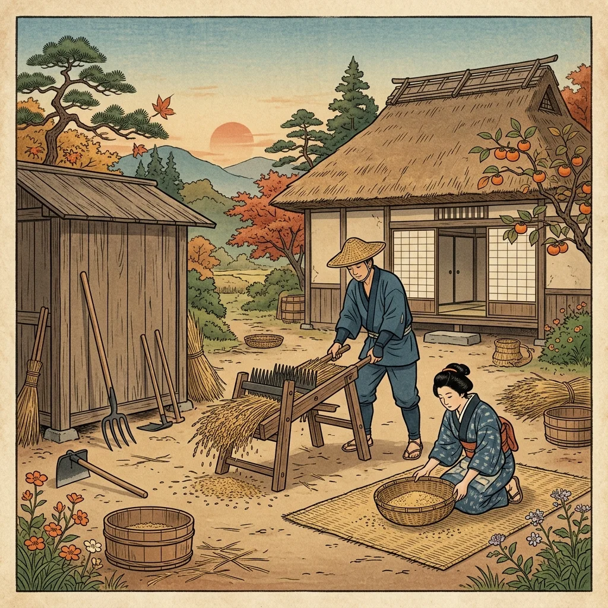
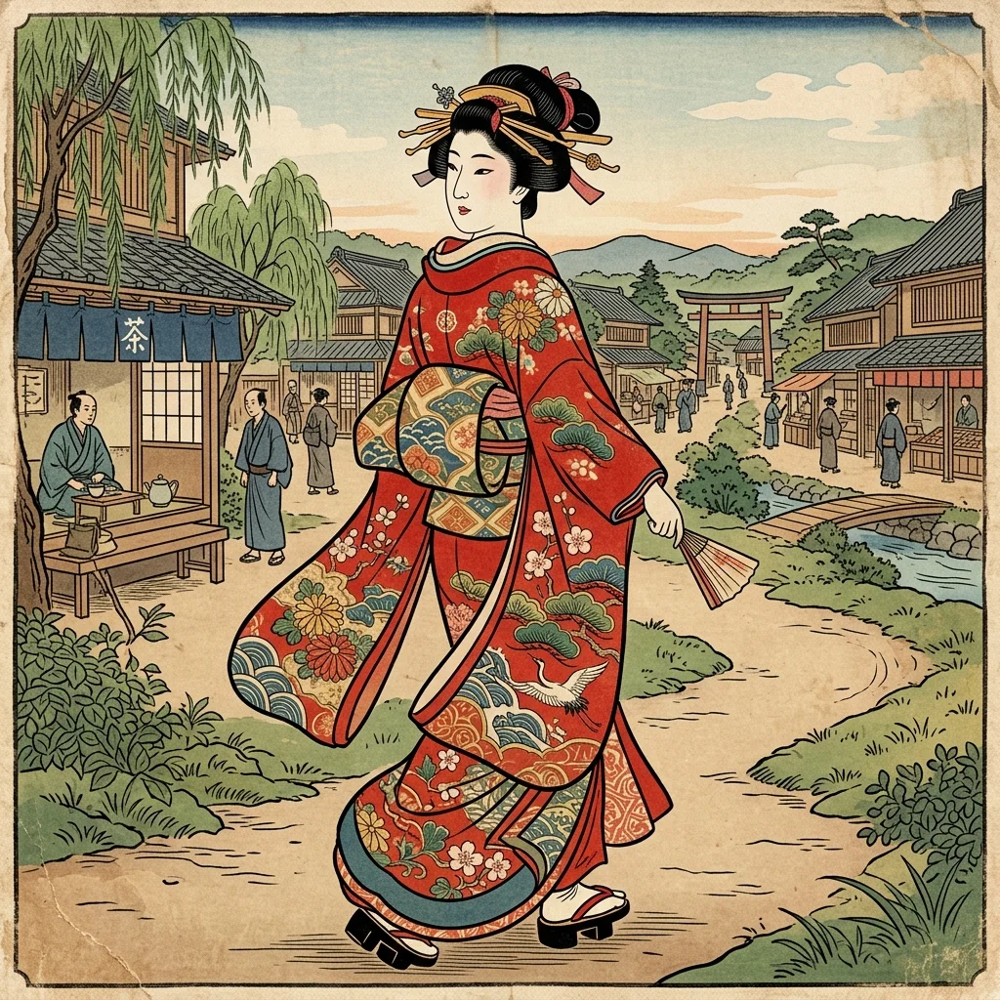

18. 産業の発展と町人の活力
江戸時代の中期になると、社会がさらに安定し、農業のやり方や流通の仕組みが大きく進歩しました。これにより、日本国内にたくさんの物資が出回り、上方（大坂・京都）の豊かな町人（商人）たちが主役となる新しい文化が繁栄することになります。今回は、江戸時代の目覚ましい経済発展と、その中で生まれた「元禄文化（げんろくぶんか）」を解説します！
1. 農業の進歩と新田開発
江戸時代には、新しい農具の普及や、幕府や藩による大規模な「新田開発（しんでんかいはつ）」によって、収穫量が大幅に増加しました。
① 効率的な農具の普及
農作業の能率や収穫量をアップさせる、様々な金属製の農具が登場しました。
- 備中鍬（びっちゅうぐわ）：刃がいくつかに分かれた鍬で、粘り気のある土でも深く耕すことができました。
- 千歯扱き（せんばこき）：鉄の歯が並んだフォークのような農具で、稲穂を通すことで、従来の数倍のスピードで脱穀（籾を落とすこと）ができるようになりました。
- 唐箕（とうみ）・千石通し（せんごくとおし）：風や網の力を用いて、もみ殻やゴミと、中身の詰まった玄米を選別しました。
- 金肥（かねひ）の利用：干したイワシを細かくした「干鰯（ほしか）」や油かすなど、お金を払って買う強力な肥料が広まりました。

図1：千歯扱きや備中鍬など、作業スピードを劇的に変えた新しい農具のイメージ
② 新田開発と商品作物の栽培
湿地や原野、海岸を埋め立てて新たな耕地を作る新田開発（しんでんかいはつ）が進み、農地面積は戦国時代の約2倍になりました。また、年貢として納める米以外に、綿花（木綿の原料）、菜種（油の原料）、藍（染料の原料）、茶などの販売して利益を得る「商品作物」の栽培が農村で一気に広まりました。
2. 交通の整備と「三都（さんと）」の繁栄
全国でできた多くの物資を各地へ届けるため、陸と海の両方で流通網が整いました。
① 五街道と航路の整備
- 陸上交通：五街道（ごかいどう）（東海道、中山道、甲州道中、日光道中、奥州道中）が整備され、人々の往来のために宿場町（しゅくばまち）や関所が置かれました。
- 海上交通：大量で重い米や特産物を一度に安く運ぶため、日本海側から瀬戸内海を通って大坂へ至る西廻り航路（にしまわりこうろ）と、東北の太平洋側から江戸へ至る東廻り航路（ひがしまわりこうろ）が開拓されました。また、江戸・大坂を定期往復する菱垣廻船（ひがきかいせん）や樽廻船（たるかいせん）が活躍しました。
② 繁栄する「三都（さんと）」の特徴
特に以下の3つの大都市が日本経済の中心になり、合わせて「三都（さんと）」と呼ばれました。
① 江戸（えど） ➔ 「将軍のお膝元（おひざもと）」
将軍が住む幕府の所在地。参勤交代により全国の武士とその家族が集まったため、人口が100万人を超える世界有数の巨大消費都市へと発展しました。
② 大坂（おおさか） ➔ 「天下の台所（てんかのだいどこ）」
水上交通の拠点であり、全国の米や特産品が一番に集まる物流と商業の日本最大の中心地でした。各藩が年貢米や特産物を売るために設置した倉庫付きの邸宅である蔵屋敷（くらやしき）が立ち並びました。
③ 京都（きょうと）
天皇や公家が住む日本の伝統文化の中心地。西陣織や清水焼など、高級な工芸品や染め物の生産地として繁栄しました。
3. 活気あふれる「元禄文化（げんろくぶんか）」
17世紀末（江戸時代前半）、三都の繁栄や商業を営む町人たちの経済力を背景に、上方（京都や大坂）を中心に、人間味あふれる現実的な元禄文化（げんろくぶんか）が花開きました。
| 分野 | 代表的な人物 | 代表作と特徴 |
|---|---|---|
| 浮世草子 （小説） |
井原西鶴 （いはらさいかく） |
『日本永代蔵（にほんえいたいぐら）』など。町人のリアルな生き様や金儲け、恋愛を生き生きと描いた。 |
| 俳諧 （はいかい） |
松尾芭蕉 （まつおばしょう） |
『おくのほそ道』など。日本全国を旅しながら、五・七・五の「俳句」を芸術の域まで高め、大成させた。 |
| 人形浄瑠璃 （演劇） |
近松門左衛門 （ちかまつもんざえもん） |
『曽根崎心中（そねざきしんじゅう）』など。実際に起きた心中事件や歴史を題材に、多くの名作劇本を書いた。 |
| 浮世絵 （絵画） |
菱川師宣 （にしかわもろのぶ） |
『見返り美人図』など。町人の暮らしや美人の姿を描いた「浮世絵」の祖。木版画の技術で量産された。 |
| 装飾画 （美術） |
尾形光琳 （おがたこうりん） |
『燕子花図屏風（かきつばたずびょうぶ）』など。金箔を背景に、大胆でデザイン性の高い華麗な絵を描いた。 |

図2：菱川師宣によって描かれた、元禄文化の傑作『見返り美人図』のイメージ
🔥 この単元のテスト対策・暗記のコツ
-
★
農具の名称と役割のセット：
・備中鍬 ➔ 刃が分かれており、土を深く耕す。
・千歯扱き ➔ 稲の脱穀（もみ落とし）をスピーディーに行う。
・これら2つの役割と写真（図）の判別がテストでよく出ます。 -
★
三都のニックネームと設置された施設：
・江戸 ➔ 「将軍のお膝元」
・大坂 ➔ 「天下の台所」➔ 諸藩が年貢米や特産物を売るために置いたのは蔵屋敷。
・記述：「なぜ大坂が天下の台所と呼ばれたのか？」➔ 解答：「交通の要所であり、日本中から大量の米や特産物が集まったから」。 -
★
元禄文化のペア暗記（絶対必要！）：
・松尾芭蕉 ➔ 俳諧（『おくのほそ道』）
・井原西鶴 ➔ 浮世草子（『日本永代蔵』）
・近松門左衛門 ➔ 人形浄瑠璃（『曽根崎心中』）
・菱川師宣 ➔ 浮世絵（『見返り美人図』）
・尾形光琳 ➔ 『燕子花図屏風』（装飾画）
・文化の特徴は、「上方（大坂・京都）を中心に、豊かな町人（商人）が主役となったこと」です。